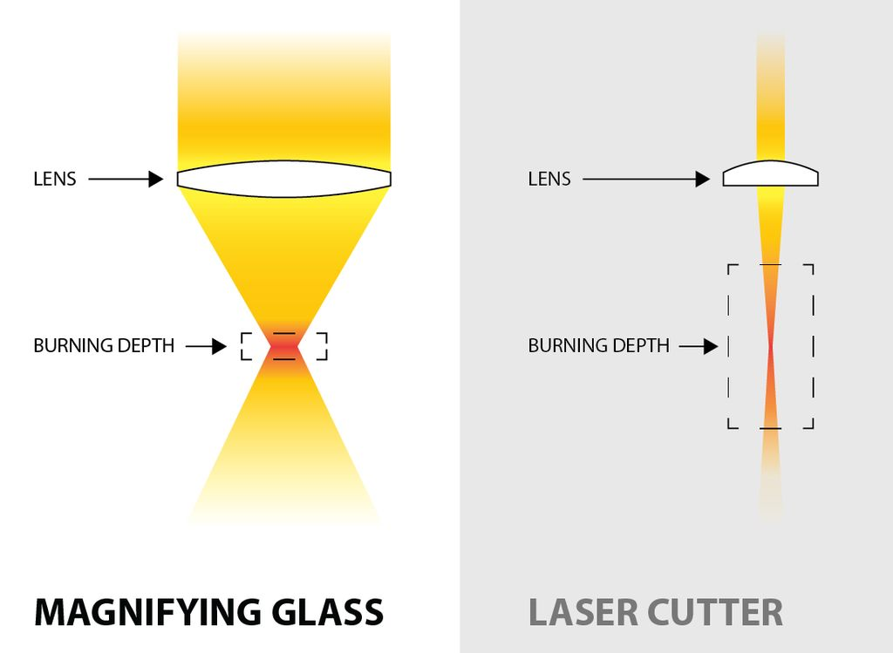

Laser is an acronym for light amplification by stimulated emission of radiation. Originally theorized by Albert Einstein in 1917, Its basically just highly focused, highly amplified light. A laser has a high degree of coherence, meaning the light has limited diffraction, is polarized, and has a single, consistent frequency over a long distance. Laser cutting is basically just a laser on a CNC gantry. The machine takes a set of vectors, points, or raster images in the form of G-code and movesthe laser around to cut and / or etch into the material. Epilog released the first laser in 1988 for small business and in 2008 the Zing was introduced for $10,000. (Instructables)

1. Design a clock using the laser cutter. The clock will be hung up on the wall in the Wang Innovation Center. You can use the materials in the WIC to create your clock. You will each be provided a 12" by 24" piece of 1/8 wood and a clock movement with hands. The design is entirely up to you and we will vote on the most creative clock once they are all hung on the wall. Be creative and use your vector and raster skills to create an impressive clock. The design must be original. When you have finished the clock, please give it to Mr. Gerber to hang on the wall.
You need to complete three different shapes using CorelDraw or Fusion to make a press fit kit. Using cardboard, cut out several of each shape and make sure they fit together snuggly. Take pictures, include the original files and describe the process of how you made it fit together.
AND
Choose 1 from this category and document each project with a picture, original files from CorelDraw and analysis of how you created each project